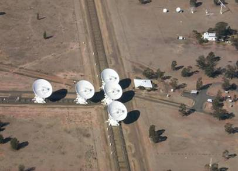

The Australia Telescope Compact Array (ATCA) is a radio interferometer situated at the Paul Wild Observatory, near Narrabri in New South Wales, Australia. It is operated by the Australia Telecope National Facility (ATNF), a branch of CSIRO (the Commonwealth Scientific and Research Organization), which also operates the Mopra and Parkes observatories.
ATCA comprises six individual 22-m radio antennae (or ‘elements’) arranged primarily along a 6-km East-West track; towards the middle of this there is also a short North-South track or ‘spur’. The ATCA’s antennae can be moved along its tracks to change the beam size or resolution available at each observing frequency.

Credit: ATNF/CSIRO
The ATCA operates in the millimetre and centimetre wavebands, specifically those centred around 20-, 13-, 6-, 3-, 1.2-, 0.7- and 0.3-cm.
The ATCA is a National Facility, which means it is open for use by everybody via a peer-review process. Applications are accepted biannually for semesters that span April-September and October-March. The winter semester is favoured for millimetre-wavelength observations, as the colder atmosphere is more stable for short-wavelength observing.